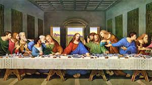
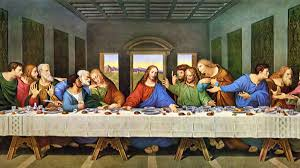
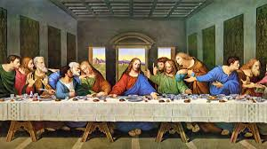

- História
- Doces

A história dos doces remonta a milhares de anos, com civilizações antigas se deliciando com guloseimas feitas a partir de fontes naturais como mel, frutas e nozes.
Mesopotâmia Antiga (2500 a.C.): A evidência mais antiga de fabricação de doces vem da Mesopotâmia antiga, onde as pessoas usavam mel para criar confeções doces. Grécia e Roma Antigas (500 a.C. - 500 d.C.): Os gregos e romanos usavam mel e frutas para criar sobremesas doces, como bolos de mel e conservas de frutas. Idade Média (500 - 1500 d.C.): O açúcar, uma commodity rara e cara, foi introduzida na Europa a partir do Oriente Médio. Somente os ricos podiam se dar ao luxo de guloseimas, tornando-as um item de luxo. Revolução Industrial (1500 - 1800 d.C.): A produção em massa de açúcar e a invenção de novas técnicas de fabricação de doces tornaram as guloseimas mais acessíveis à população em geral. Era Moderna (1800 d.C. - presente): O desenvolvimento de novos ingredientes, como chocolate e baunilha, e o aumento da produção de doces em escala industrial levaram à diversidade de guloseimas que desfrutamos hoje.